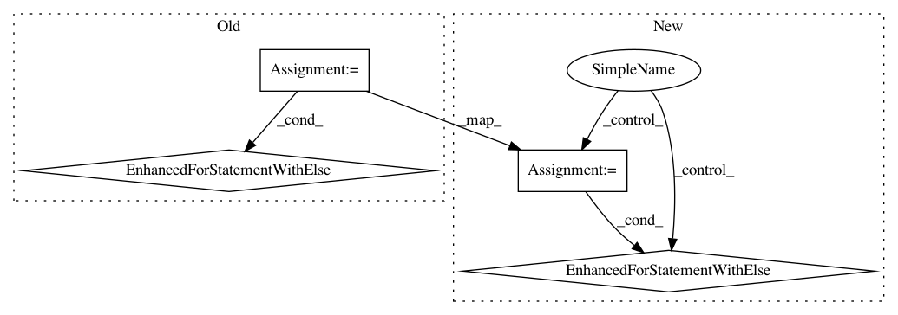

964ca2566c6a09db485fae02d9f565d28c4aaeb9,examples/canvas/canvas.py,,clone_plot,#Any#Any#,99
Before Change
newtool.drag_button = "left"
newplot.tools.append(newtool)
for tool in oldplot.tools:
if isinstance(tool, MoveTool):
newtool = tool.clone_traits(move_traits)
newtool.component = newplot
break
else:
newtool = MoveTool(newplot, drag_button="right")
newplot.tools.append(newtool)
for tool in oldplot.tools:
if isinstance(tool, SimpleZoom):
After Change
newtool.drag_button = "left"
newplot.tools.append(newtool)
for tool in oldplot.tools:
if isinstance(tool, MoveTool):
newtool = tool.clone_traits(move_traits)
newtool.component = newplot
break
else:
newtool = MoveTool(newplot, drag_button="right")
newplot.tools.append(newtool)
for tool in oldplot.tools:
if isinstance(tool, SimpleZoom):
In pattern: SUPERPATTERN
Frequency: 3
Non-data size: 4
Instances
Project Name: enthought/chaco
Commit Name: 964ca2566c6a09db485fae02d9f565d28c4aaeb9
Time: 2008-03-15
Author: pwang@651a555e-23ca-0310-84fe-ca9f7c59d2ea
File Name: examples/canvas/canvas.py
Class Name:
Method Name: clone_plot
Project Name: jonathf/chaospy
Commit Name: 00e8af5760dbb5433702caf2a35daa65789d120c
Time: 2020-02-24
Author: jonathf@gmail.com
File Name: chaospy/distributions/approximation.py
Class Name:
Method Name: approximate_inverse
Project Name: pytorch/audio
Commit Name: 38d1a9b6325d8b69e9b26ce28b1f1a8e0040c51b
Time: 2019-11-06
Author: vincentqb@users.noreply.github.com
File Name: torchaudio/datasets/librispeech.py
Class Name:
Method Name: load_librispeech_item